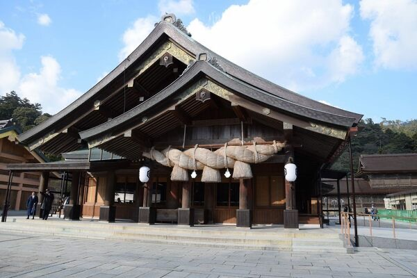
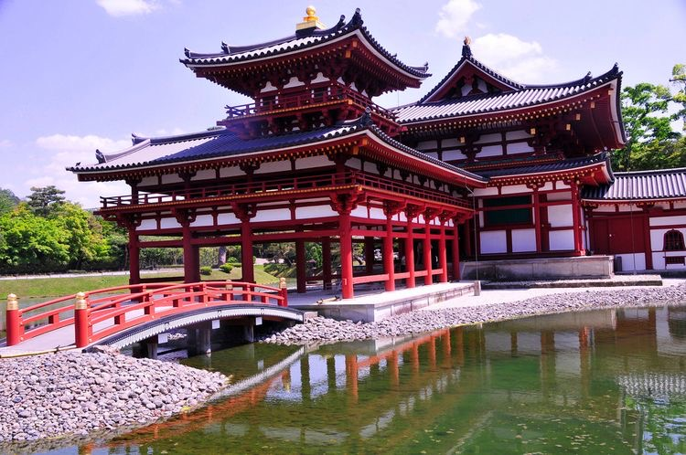
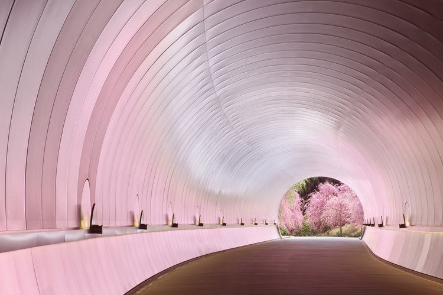

Magnifique, ancienne, élégante, belle, agréable, galante, grandiose… Visiter le Japon se fait forcément aux côtés d’une longue liste de superlatifs.
Et encore, aucun ne suffit à décrire le Japon et sa splendeur.

IZUMO-TAISHA
Izumo (出雲市?, Izumo-shi) est une ville située dans la préfecture de Shimane. La ville est renommée pour son sanctuaire shinto, le plus ancien du pays.
Izumo est située dans le Nord-Est de la préfecture de Shimane. La ville est bordée par la mer du Japon, au nord, et le lac Shinji, à l'est.
La ville moderne d'Izumo a été fondée le 3 novembre 1941. Le 22 mars 2005, la ville de Hirata et les bourgs de Koryō, Sada, Taisha et Taki sont intégrés à Izumo. Le 1er octobre 2011, le bourg de Hikawa fusionne avec la ville.

BYODOIN
Le Byōdō-in (平等院?) est un temple bouddhiste établi par Fujiwara no Yorimichi en 1052, à la fin de l'époque de Heian, dans la ville de Uji dans la préfecture de Kyōto au Japon.
Le bâtiment le plus célèbre est le pavillon du Phénix ou pavillon d'Amida, dont la construction est achevée en 1053. Le propriétaire précédent, Minamoto no Tōru, utilisait le bâtiment comme résidence de campagne.
Les autres bâtiments rattachés au temple ont été détruits pendant la guerre civile en 1336. Le temple a notamment été le lieu de la première bataille d'Uji, en 1180, qui a été au commencement de la guerre de Gempei.

La gallerie de Miho
Le musée Miho est situé au sud-est de Kyoto , au Japon , près de la ville de Shigaraki , dans la préfecture de Shiga . C'est aussi le siège du Shinji Shumeikai , un nouveau groupe religieux fondé par Mihoko Koyama .
Le musée était le rêve de Mihoko Koyama (d'après qui il porte son nom), fondateur de l'organisation religieuse Shinji Shumeikai [1] qui compterait aujourd'hui quelque 300 000 membres dans le monde. [2] En outre, dans les années 1990, Koyama a commandé le musée pour être construit près du temple de Shumei dans les montagnes de Shiga.
Le musée Miho abrite la collection privée d'antiquités asiatiques et occidentales de Mihoko Koyama achetées sur le marché mondial par l'organisation Shumei dans les années précédant l'ouverture du musée en 1997. Alors que Koyama a commencé à acquérir des récipients de cérémonie du thé en grès dès les années 1950, l'essentiel des les acquisitions du musée ont été faites dans les années 1990.
Manga-Animes Japonais
Un manga (漫画?) est une bande dessinée japonaise.
Le mot « manga » est par ailleurs parfois utilisé pour désigner, par extension, une bande dessinée non japonaise respectant les codes des productions populaires japonaises ou pour nommer, par métonymie, d'autres produits visuels rappelant certaines de ces bandes dessinées (dessins animés, style graphique, etc.).
Les mangas traduits en langue française se lisent généralement dans le sens d'origine (de droite à gauche). En raison du rythme élevé de parution, la plupart des mangas sont dessinés en noir et blanc.
Les deux premiers pays les plus consommateurs de mangas sont le Japon et la France1,2,3,4,5.
La personne réalisant des mangas est appelée mangaka.